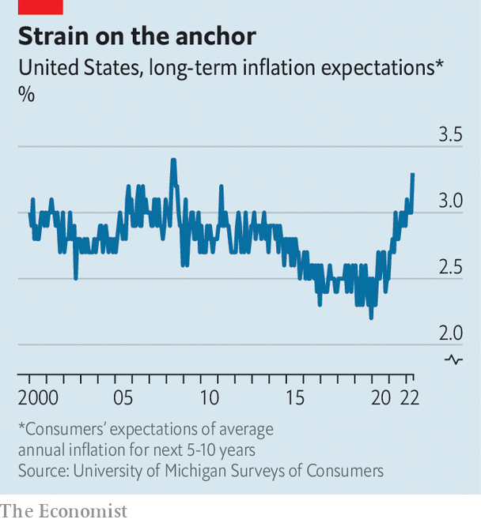

As prices soar, markets tumble—and the Democrats may be next
Editor’s note (June 14th 2022): this story was updated to reflect new expectations of higher rate rises by the Fed.
In an alternate universe, America clearly passed its peak in inflation a couple of months ago; the Federal Reserve is still talking tough but investors have started to expect less monetary tightening, a great relief for stockmarkets; and Joe Biden can at last sense victory over rising prices, arguably the greatest nemesis of his presidency thus far. Until a few days ago many thought America would be inhabiting that other world. Alas, a brutal batch of data has awoken them to a more dispiriting reality. Inflation, far from peaking, seems to be gaining altitude, with potentially dramatic consequences for the Fed, for investors and for American politics.
On June 10th the Bureau of Labour Statistics reported that the consumer-price index in May was 8.6% higher than a year earlier, the fastest annual rate of inflation since 1981. More concerning was the momentum. Month on month, consumer prices rose by 1%, well above the 0.3% increase in April.
Adding to the grim news was a plunge in consumer sentiment to a record low, as measured by a closely watched survey from the University of Michigan. The principal cause was stubbornly high inflation. Consumers now expect an average inflation rate of 3.3% over the next five to ten years, up from their expectation of just 3% a month earlier. This does not yet mean that inflation expectations are “unanchored”—a much-dreaded condition that could set the stage for an upward spiral in prices—but it certainly is enough to stir fear at the Fed. The broadening of inflationary pressures, from goods such as cars and electronics to wages and rental costs, darkens the backdrop. And motorists will have noticed the surging price of petrol, which, for the first time ever, now exceeds $5 a gallon.

Had America been in the more benign alternate universe, talk now would have centred on when the Fed might be able to adopt a more relaxed posture. Indeed, as recently as May 23rd, Raphael Bostic, president of the Fed’s branch in Atlanta, said the central bank may want to pause its interest-rate increases at its meeting in September, in order to take stock of all the latest developments.
Such restraint now seems off the table. Instead, market pricing has shifted in a far more hawkish direction. Most investors now think the Fed will raise rates by three-quarters of a percentage point on June 15th, at the conclusion of a regular rate-setting meeting. The last time that the Fed delivered such a jumbo rate rise was in 1994 under Alan Greenspan. Moreover, many expect that the Fed will follow up with yet another three-quarter-point increase at its next meeting in July and then a half-point in September. That would make for the fastest pace of tightening since the 1980s.
The prospect of the central bank slamming on the monetary brakes has unnerved markets. The S&P 500, Wall Street’s flagship stock index, has tumbled by 5% since the inflation data were released. Tech stocks, from Amazon to Tesla, have sold off even more sharply. And for some high-risk assets, the carnage has been far worse. The price of Bitcoin fell by more than 10% on June 13th after Celsius, a cryptocurrency lending firm, paused all withdrawals from its platform because of “extreme market conditions”. The historical record suggests that America would be lucky to escape a recession when the Fed tightens so aggressively.
For Mr Biden’s administration, the economic frustrations are only deepening. On one hand, inflation is much more than just an American problem. In Britain, consumer prices have been rising even faster, hitting an annual pace of 9% in April. From Germany to Australia, inflationary pressures are bubbling up. Even Japan, long mired in deflation, is not immune. The rapid ascent in food and energy prices, caused in large part by Russia’s invasion of Ukraine, is a global affliction. Continuing snags in cross-border supply chains, stemming from the covid-19 pandemic, have made matters worse. Mark Zandi, an economist with Moody’s Analytics, an arm of a credit-rating agency, estimates that Russia’s war and the lingering covid pandemic account for nearly two-thirds of the annual rise in inflation over the past year.
On the other hand, American voters will not be so forensic in their analysis of price trends, nor so forgiving in their assessment of Mr Biden’s responsibility. Just over 500 days into his presidency, 49% of Americans disapprove of his performance, while 41% approve, according to weekly opinion polls conducted by The Economist and YouGov. That negative gap of eight percentage points puts Mr Biden in a weak position at this point in the electoral cycle (albeit in a slightly better one than Donald Trump at the same time in his presidency).
Mid-term elections, due to be held in November, rarely go well for the president’s party. Sky-high inflation could make them an unmitigated disaster for Democrats, with Republicans on track to wrest control from them of both the Senate and the House of Representatives. Mr Biden has tried to direct attention to the millions of jobs recovered over the past year as America claws its way back from the pandemic. But the soaring cost of living and the rising prospect of recession are instead top of mind. ■